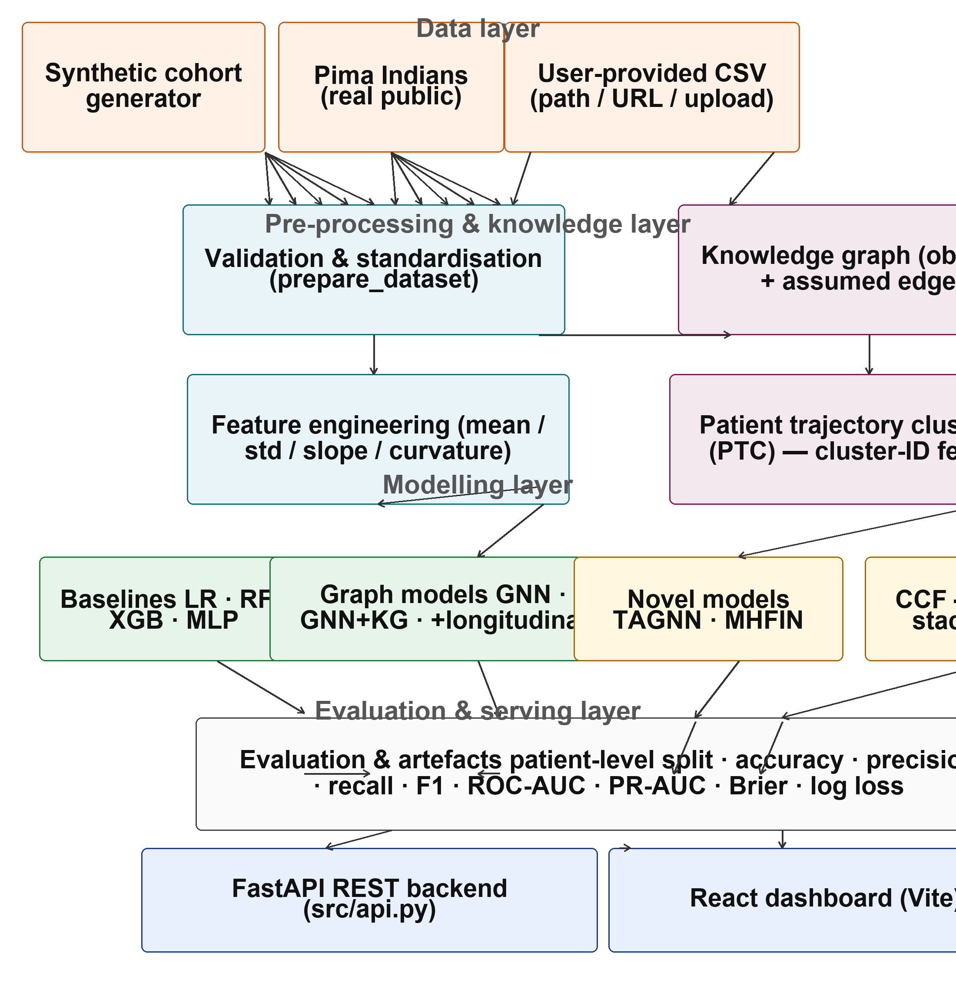
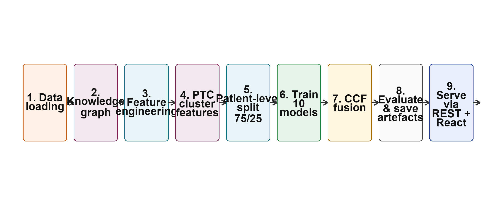
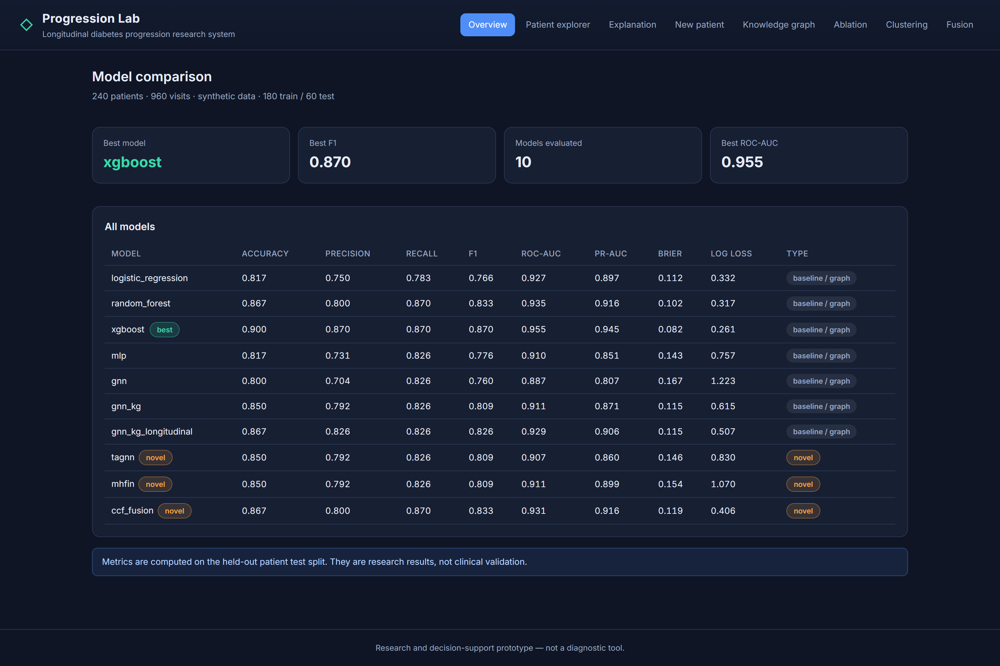

Diabetes is a progressive chronic condition whose management depends on the ability to anticipate how an individual’s metabolic state will evolve over time. Glycated haemoglobin (HbA1c), fasting glucose, body-mass index, and blood pressure are routinely recorded at successive clinical visits, producing a longitudinal record that is fundamentally different from the single-snapshot data assumed by most tabular classifiers. A model that treats each row as independent discards the ordering of measurements and the shape of the trajectory; a model that ignores patient-to-patient structure cannot exploit similarity between individuals who share conditions or metabolic patterns.
This paper describes a fully implemented research framework for diabetes progression modelling that brings together four modelling ideas that are normally studied in isolation: (i) knowledge-graph reasoning over patient and condition entities, (ii) longitudinal trajectory features derived from multiple visits, (iii) graph neural networks with attention, and (iv) calibrated probabilistic fusion for ensemble decisions. The framework is organised as a layered pipeline — data, pre-processing and knowledge, modelling, and serving — and is evaluated on a cohort of 240 patients with four visits each.
Graph neural networks generalise deep learning to relational data by iteratively propagating and aggregating messages over a graph structure. Attention mechanisms, originally introduced for sequence modelling, have been adapted to graphs to let a node decide which neighbours should influence its representation. However, most graph attention variants attend over structural or feature similarity and do not explicitly consider whether two patients are co-evolving along a clinical trajectory. Our TAGNN closes this gap with a temporal gate that compares the feature trajectories of the two endpoints of each edge.
Ensembles improve robustness, but naive averaging ignores the fact that models differ in reliability. Calibration of modern neural networks was studied by Guo et al., who showed that confidence is often poorly calibrated and can be corrected with a learnt temperature or probabilistic layer. We adopt a logistic stacking layer that learns per-model coefficients rather than a single temperature, so the fusion weight of each model emerges directly from its out-of-fold behaviour. Interpretability of black-box models is a recurring concern in clinical applications; local explanation methods such as LIME and SHAP approximate per-instance feature contributions, whereas our system surfaces interpretable artefacts directly: trajectory features, cluster identifiers, and learned attention weights are reported alongside every prediction. Tabular ensemble methods such as random forests and gradient boosting remain strong baselines on structured clinical data, and we retain them as reference points.
The architecture is organised into four layers (Fig. 1). The data layer accepts one of three sources: a reproducible synthetic cohort generator, the public Pima Indians dataset, or an arbitrary user-provided longitudinal CSV (by path, URL, or upload). The pre-processing and knowledge layer validates and standardises the data, builds the knowledge graph, and derives per-patient trajectory features and cluster identifiers. The modelling layer trains ten models: four tabular baselines, a plain graph model and two progressive graph-kernel variants, the two novel architectures TAGNN and MHFIN, and the CCF stacked fusion. The serving layer evaluates every model on the held-out patient split, persists artefacts to JSON and PyTorch checkpoint files, and exposes all results through a FastAPI backend and a React dashboard served by Vite.

Each patient is represented by up to four labelled visits with visit number, date, age, HbA1c, glucose, BMI, systolic and diastolic blood pressure, and a condition label. The progression target is derived from the trajectory: a patient progresses if the final HbA1c exceeds the first by at least 0.5 % or if the final value is at least 6.5 %. Validation enforces column presence, numeric coercion, and enough visits per patient to support longitudinal features.
The knowledge graph is a directed multigraph with two node types: patient nodes and condition nodes. Two edge types are distinguished: observed edges from a patient to their condition, justified by the dataset, and assumed similarity edges between patients who share a condition, explicitly labelled as modelling assumptions rather than causal or clinical evidence. Keeping these edge types separate is deliberate: it lets downstream models exploit population similarity while making the epistemic status of each edge auditable.
From the first three visits we compute per-feature means and standard deviations for the six clinical measurements, then fit a linear model over the visit index to obtain the HbA1c slope, glucose slope, and an HbA1c curvature term. This yields a compact patient-level vector that retains both the level and the direction of change of each measurement.
Rather than clustering patients on raw values, PTC clusters on trajectory shape. The HbA1c slope and, when available, the curvature define a two- (or three-) dimensional space that is segmented with k-means (k = 5). Each patient receives a cluster identifier that is one-hot encoded and concatenated to the feature matrix, providing the classifiers with population-level progression patterns.
The tabular baselines are logistic regression, a random forest, an XGBoost classifier, and a multilayer perceptron, all trained on the standardised feature matrix. The graph models share a message-passing backbone: features of neighbour nodes are aggregated by weighted sum, normalised by degree, gated by a learned attention signal, and passed through a two-layer head. Three configurable variants are trained: a plain graph model, a knowledge-graph variant whose edges encode elevated-HbA1c co-morbidity similarity, and a longitudinal variant that additionally consumes slope and curvature features.
TAGNN augments standard message passing with a learned temporal gate. For each directed edge (u, v), a two-layer sigmoid gate receives the concatenation of the source and target feature vectors and produces a scalar in (0, 1) that down-weights neighbours whose feature trajectory diverges from the target patient:
where xu is the feature vector of node u, WN is the neighbour projection, and g is the temporal gate. Messages are summed per source node, normalised by degree, combined with the self-projection, layer-normalised, and passed through a ReLU. The model stacks two such layers followed by a linear classification head, trained with binary cross-entropy over the training-patient mask with an Adam optimiser.
MHFIN enriches the base representation with explicitly modelled pairwise feature interactions. A set of k linear projections (here k = 4) maps the input to k low-dimensional embeddings; the original features and all projections are concatenated into a single enriched vector that feeds a two-layer classification head. This is cheaper than explicit combinatorial feature engineering and provides the classifier with a compact interaction basis.
CCF replaces hard voting or simple averaging with a calibrated stack. Let P be the n×m matrix of predicted probabilities from m base models. A logistic calibration layer learns a coefficient per model, p̂ = σ(w0 + Σj=1..m wjPj), so that models whose probabilities are better calibrated receive higher weight. Coefficients are fit on the training split; the final calibrator is trained on out-of-fold predictions obtained from an inner stratified cross-validation, and the learned weight vector is persisted as a model-level artefact.
The end-to-end workflow (Fig. 2) proceeds in nine stages: (1) data loading from one of the three sources; (2) construction of the knowledge graph; (3) computation of trajectory features; (4) PTC clustering and one-hot encoding; (5) patient-level stratified 75/25 split; (6) training of the ten models; (7) calibrated stacking of the base and graph models into CCF; (8) evaluation on the held-out split and persistence of metrics, graphs, and checkpoints; and (9) serving through the REST API and dashboard. The pipeline is reproducible: a fixed random seed governs cohort generation and all splits.

The synthetic cohort contains 240 patients and 960 visits (four visits per patient). A patient-level stratified split retains 180 patients for training and 60 for testing, so the evaluation reflects generalisation to unseen patients rather than unseen rows. All metrics are computed on the test set with a 0.5 decision threshold. Results for the final model run are summarised in Table 1.
| Model | Acc | Prec | Rec | F1 | ROC | PR | Brier | LL |
|---|---|---|---|---|---|---|---|---|
| Logistic regression | 0.817 | 0.750 | 0.783 | 0.766 | 0.927 | 0.897 | 0.112 | 0.332 |
| Random forest | 0.867 | 0.800 | 0.870 | 0.833 | 0.935 | 0.916 | 0.102 | 0.317 |
| XGBoost | 0.900 | 0.870 | 0.870 | 0.870 | 0.955 | 0.945 | 0.082 | 0.261 |
| MLP | 0.817 | 0.731 | 0.826 | 0.776 | 0.910 | 0.851 | 0.143 | 0.757 |
| GNN | 0.800 | 0.704 | 0.826 | 0.760 | 0.887 | 0.807 | 0.167 | 1.223 |
| GNN + KG | 0.850 | 0.792 | 0.826 | 0.809 | 0.911 | 0.871 | 0.115 | 0.615 |
| GNN + KG + longitudinal | 0.867 | 0.826 | 0.826 | 0.826 | 0.929 | 0.906 | 0.115 | 0.507 |
| TAGNN | 0.850 | 0.792 | 0.826 | 0.809 | 0.907 | 0.860 | 0.146 | 0.830 |
| MHFIN | 0.850 | 0.792 | 0.826 | 0.809 | 0.911 | 0.899 | 0.154 | 1.070 |
| CCF fusion | 0.867 | 0.800 | 0.870 | 0.833 | 0.931 | 0.916 | 0.119 | 0.406 |
Two findings stand out. First, the staged ablation over the graph family confirms the value of each component: the plain GNN reaches F1 = 0.760, adding knowledge-graph edges raises it to 0.809, and adding longitudinal features raises it further to 0.826 (ROC-AUC improving from 0.887 to 0.929). Each architectural choice therefore contributes a measurable, monotone improvement.
Second, the strong tabular baseline XGBoost posts the highest raw scores in most columns, which is expected on a clean, fully specified synthetic cohort. The value of the graph-based and fusion models lies in where they are not worse in aggregate. CCF matches the best F1 of the random forest (0.833) while substantially lowering log loss relative to the individual neural and graph models (0.406 versus 0.507–1.223), illustrating the effect of calibration on probability quality. Among the novel methods, MHFIN attains the best PR-AUC (0.899) and ties the knowledge-graph ROC-AUC (0.911) while remaining a purely tabular model.
| Stage | Acc | Prec | Rec | F1 | ROC | PR | Brier | LL |
|---|---|---|---|---|---|---|---|---|
| gnn | 0.800 | 0.704 | 0.826 | 0.760 | 0.887 | 0.807 | 0.167 | 1.223 |
| gnn + kg | 0.850 | 0.792 | 0.826 | 0.809 | 0.911 | 0.871 | 0.115 | 0.615 |
| gnn + kg + long. | 0.867 | 0.826 | 0.826 | 0.826 | 0.929 | 0.906 | 0.115 | 0.507 |
The monotone improvement corroborates the motivation of the knowledge-graph design: population knowledge and temporal features each add predictive signal. The dashboard additionally exposes an explanation probe for an exemplar test patient, the learned CCF model coefficients, and per-node attention weights, keeping the system’s internal reasoning inspectable.
All pipeline outputs — metric tables, ablation records, split meta-data, trajectory clusters, CCF weights, explanation probes, and the knowledge-graph file — are consumed by a FastAPI backend. The API exposes resource endpoints for metrics, ablation, split summary, patients, dataset rows, explanations, clusters, fusion weights, the knowledge graph, single-patient inference, and dataset ingestion. A React dashboard built with Vite consumes these endpoints and visualises the model comparison, patient-level trajectories, the interactive knowledge graph, feature explanations, clustering, ablation comparison, and fusion weights. Fig. 3 shows the model-comparison overview served by the deployed system.

The results are best understood through three lenses. From a modelling perspective, the ablation shows that relational structure and temporal features are complementary sources of signal in patient-level prediction. From a practical perspective, the calibrated fusion demonstrates that per-model reliability weighting can improve probability quality without changing any base model. From a deployment perspective, the layered architecture means each component — generator, graph builder, feature extractor, model, calibrator, or visualisation — can be replaced independently, which is valuable in a research tool that must track evolving clinical endpoints.
It should be stressed that this is a research and decision-support prototype. The synthetic cohort used for the headline numbers is deliberately stylised, and no clinical claim is intended.
We presented a complete longitudinal knowledge-graph-aware framework for diabetes progression modelling, with four novel components — TAGNN, MHFIN, CCF, and PTC — embedded in a ten-model pipeline, a patient-level evaluation protocol, and a live web serving layer. The staged ablation demonstrates consistent gains from knowledge-graph edges and longitudinal features, and calibrated fusion improves probability quality over individual neural models.
Future work will validate the framework on the real Pima dataset and on external longitudinal cohorts, benchmark TAGNN attention weights against clinician-annotated progression signals, and extend CCF to asymmetric loss weighting for screening applications where false negatives are more costly than false positives.